38 siswa Infinity lulus PKN STAN 2018. Ini mereka.
Arsip kelulusan dari empat cabang: Depok, Jember, Lombok, dan Sukabumi. Nama, jurusan, dan asal sekolah dari data kami; testimoni ditulis siswa sendiri dan kami tampilkan apa adanya.
- Lulusan 2018
- 38
- Cabang
- 4
- Program studi
- 8
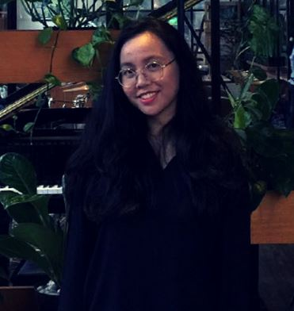
“Yg paling berkesan buat aku adalah sesi hipnoterapinya. … Aku merasa banyak bgt dapet motivasi dari sesi itu.”
Yang paling sering mereka ceritakan: tentor dan trik cepat.
Kutipan di bawah dipotong dari testimoni tertulis siswa (tanda … menandai bagian yang dilewati). Ejaannya tidak kami ubah. 19 dari 38 lulusan menulis testimoni.
“Tentor yang friendly dan asik diajak sharing membuat Saya mengerti materi terutama bahasa inggris yang sebelumnya saya sama sekali tidak bisa. Terimakasih INFINITY, sekarang saya bisa masuk dijurusan yang saya inginkan.”
“Mendapatkan kesempatan beasiswa les di Bimbel Infinity Sukabumi sangat membantu saya untuk menggapai cita - cita saya untuk masuk di PKN STAN.”
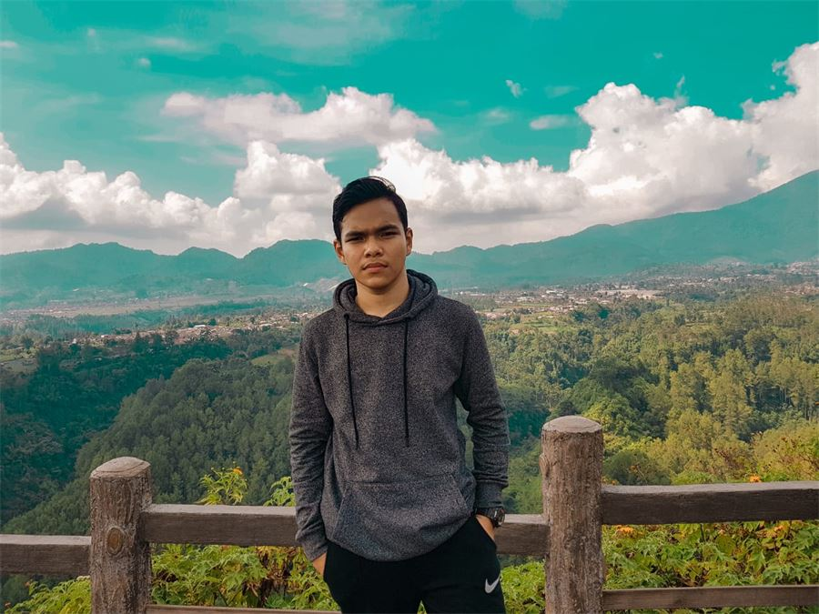
Dennis GibrailD3 Akuntansi · Infinity Sukabumi“Banyak trik cepat yang diajarkan para tentor sehingga mempermudah kita dalam mengerjakan soal-soal yang sering keluar dalam SPMB PKN STAN.”
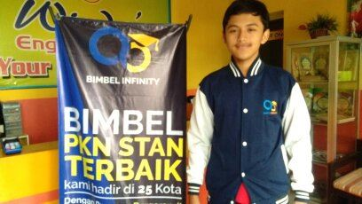
Muhammad Yoga AndromedaD3 Pajak · Infinity Jember“Sebelum saya Les, saya Gak tau apa-apa tentang sistem Dan trik buat masuk STAN. Tapi setelah gabung, Infinity sudah sangat membantu saya.”
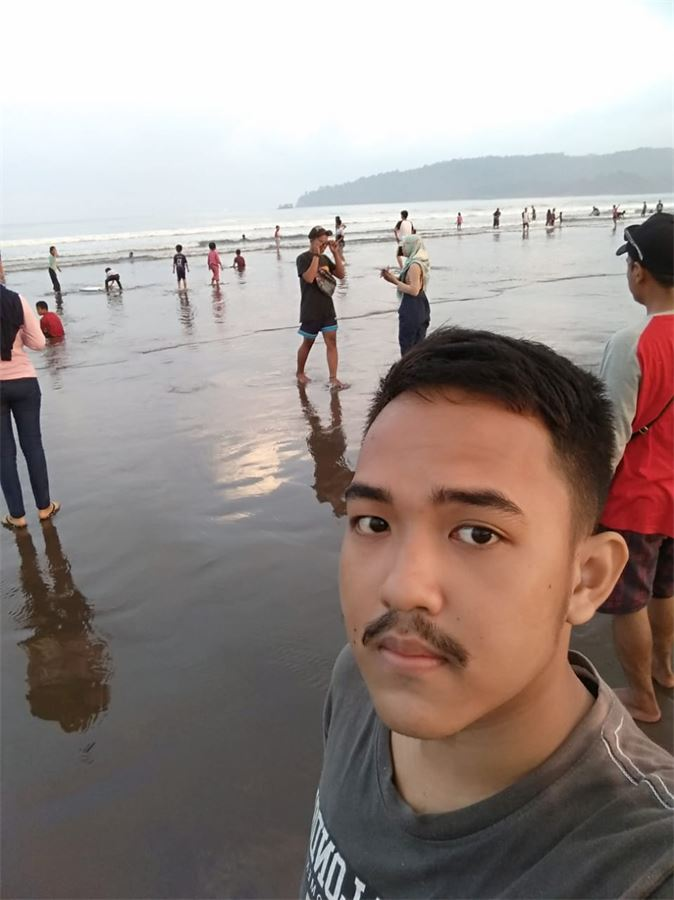
Delyuzar MaulanaD3 Kebendaharaan Negara · Infinity Depok“Tentornya juga sabar, tekun, telaten sekali, meskipun saya bertanya pertanyaan berulang-ulang, hehe.”
“Saya yang awal sama sekali tidak paham pengerjaan TBI. Setelah bimbel di Infinity saya tahu trik dalam mengerjakan soal SPMB STAN terutama TBI.”
“Kuliah di STAN adalah impian besar yang paling saya harapkan dan infinity sangat membantu dalam hal materi dan pemberian motivasinya.”
“Belajar di infinity seru banget dan membantu untuk lulus USM STAN. Guru gurunya asyik dan siap selalu untuk ditanya soal kapan aja.”
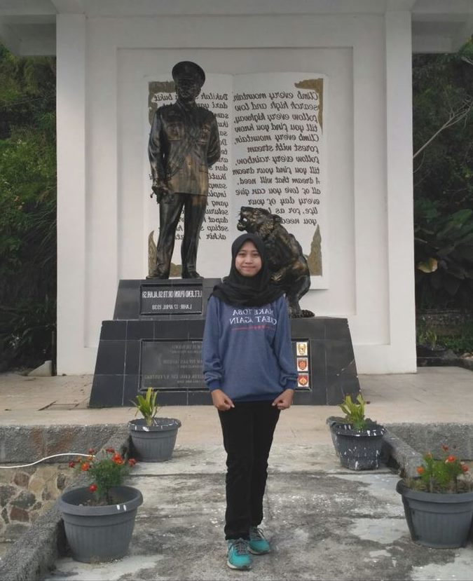
Farah Khairunisa SoliandryD3 Pajak · Infinity Depok“Dengan tentornya yang hebat dan seru. Serta buku rumus cepat dari Infinity, Yang menjadi favorite saya.”
Semua lulusan 2018
-
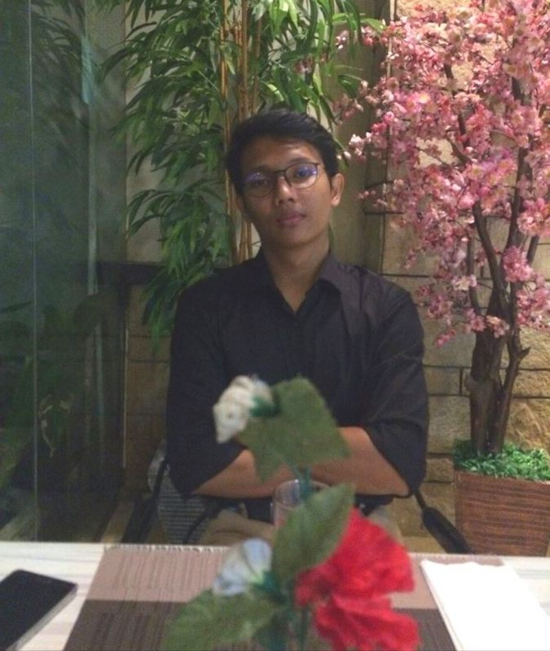
Arraz Meidyan D1 Pajak Enak pembelajaran di infinity. Yg ngajar jg baik baikkk. Enak ngajarnyaa -
Farah Khairunisa Soliandry D3 Pajak Belajar di infinity seru banget dan membantu untuk lulus USM STAN. Guru gurunya asyik dan siap selalu untuk ditanya soal kapan aja. Sukses terus infinity!
-
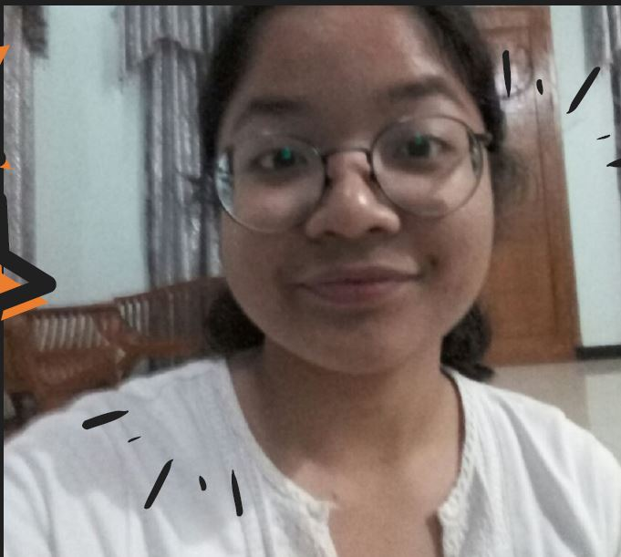
Chintya Magdalena Ambarita D3 Pajak -
Jundan Daffa Mahaputra D1 Pajak Infinity baguss... Enak belajarnya santaii.... Gurunya juga friendly semua jadi bisa lebih seru belajarnya. Pelajarannya juga komplit jadinya mantap “
-
Maridean Yunita Wagiu D3 Pajak Aku seneng banget belajar di bimbel infinity depok. Kakak2nya berbakat semua! Mulai dari kak Aria yg jago bgt dalam bidang matematika : sesulit apapun soal itu pasti dia jawab! Kalau gatau? Bakal dia cari sampe dapet +++ cara cepetnya yg mudah bgt dipahami. Kak Intan? Gausah ditanya lagi! Bahasa Inggrisnya jago bgt bgt bgt! Disesi belajarnya, beliau suka menyelipkan intermeso2 biar gak bosan + bagaimana cara pengucapan kata yg benar. Terus kakak yg ngajar twknya juga baik & pinter bgt! Beliau kalau ditanya apapun ttg twk beliau pasti ngerti dan pasti bakal dijawab. Udah gitu, jawabannya disertai dengan hal2 yg bersangkutan dgn apa yg kita tanyakan. Enak bgt deh! Menurutku, yg paling berkesan buat aku adalah sesi hipnoterapinya. Padahal, sebelum hipnoterapi aku males bgt & sempet berkeinginan buat bolos aja. Cuman karena ((rada)) dipaksa sama kakaknya, akhirnya aku ikut jg. Eh, abis ikut, aku gak nyesel. Aku merasa banyak bgt dapet motivasi dari sesi itu. Mereka buat aku merasa tambah semangat dan pantang menyerah buat meraih mimpiku, keterima di D3 Pajak PKN STAN. Terus aku juga diajari gmn caranya dalam menghadapi ujian biar gak deg2an. Dan itu membantu banget. Kayak dikasih sugesti2 gitu biar kita gak nyerah sama mimpi. Makasih bimbel infinity udah bantuin aku untuk mewujudkan mimpiku
-
Delyuzar Maulana D3 Kebendaharaan Negara Belajar Di Infinity efektif banget.Sebelum saya Les, saya Gak tau apa-apa tentang sistem Dan trik buat masuk STAN. Tapi setelah gabung, Infinity sudah sangat membantu saya. Thanks Infinity.
-
BeasiswaSalsabila Putri Wardhani D3 Pajak tentornya enak ngajarnya dan ramah jadinya gampang paham materinya
-
BeasiswaImer Andriano D3 Pajak Kakak kakak pengajarnya baik dan ramah, penyampaian materinya jelas dan mudah dimengerti. Bukunya sangat bermanfaat
-
Muhammad Yoga Andromeda D3 Pajak Bimbel diInfinity sangat nyaman dan menyenangkan. Tentor-tentornya baik dan sangat Profesional dalam menyampaikan materi. Materi yang disampaikan juga sangat padat dan mudah diingat. Bimbel Infinity juga menyediakan Try Out harian dan mingguan dengan soal-soal yang sangat update sehingga mengasah kemampuan saya dalam mengerjakan soal-soal STAN yang uptodate. Banyak trik cepat yang diajarkan para tentor sehingga mempermudah kita dalam mengerjakan soal-soal yang sering keluar dalam SPMB PKN STAN. Infinity top banget deh.
-
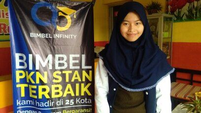
Arifa Salsabila D1 Pajak Menurut saya Infinity Jember itu salah satu bimbel STAN yang bagus di Jember. Meskipun Baru beberapa waktu didirikan, fasilitas penunjang belajarnya sudah cukup baik. Kakak kakak Tentornya juga ramah, dan sangat membantu dalam kegiatan pembelajaran. Kedepannya, Semoga Bimbel Infinity Jember semakin maju, fasilitasnya semakin baik, dan bisa sukses Menjadi jembatan teman-teman menuju PKN STAN, terimakasih Bimbel Infinity Jember. -
BeasiswaArin Dwi D1 Pajak Pertama saya ucapkan terimakasih kepada bimbel infinity atas bimbingannya selama ini. Proses pembelajaran dibimbel infinity sangat efektif, karena pemberian materi-materi STAN benar-benar diajarkan dari dasarnya sehingga siswa dapat lebih mudah mengerti. Selain itu, jadwalnya juga terstruktur. Banyak juga tips n trik (cara cepat) yang diberikan kepada siswa agar dapat mengoptimalkan waktu saat tes berlangsung. tentornya juga sabar, tekun, telaten sekali,meskipun saya bertanya pertanyaan berulang-ulang, hehe. Sekali lagi terimakasih bimbel infinity
-
Nafira Iftitah Maulidya Yanuar D3 Akuntansi Buku-buku latihan soal dan carcep dari bimbel infinity sangat membantu saya dalam mengerjakan soal USM PKN STAN, try out rutin yang membuat saya sering berlatih semakin membuat saya siap menghadapi USM. Tentor yang friendly dan asik diajak sharing membuat Saya mengerti materi terutama bahasa inggris yang sebelumnya saya sama sekali tidak bisa. Terimakasih INFINITY, sekarang saya bisa masuk dijurusan yang saya inginkan.
-
Amanda Ayu Nurfajrina D1 Kepabeanan dan Cukai senang belajar diinfinity selain belajar juga bisa menambah saudara karena ramah-ramah. Entah itu dari tentor atau teman seperjuangan. Pesan: tingkatkan kualitasnya, terutama dari segi tentor kak. Semoga menjadi bimbel stan terbaik di indonesia
-
BeasiswaPraditya Zulfi Wibarahman D1 Kepabeanan dan Cukai Infinity asik. Saya yang awal sama sekali tidak paham pengerjaan TBI. Setelah bimbel di Infinity saya tahu trik dalam mengerjakan soal SPMB STAN terutama TBI. program pemberian Bimbel gratis pun sangat membantu. Semoga infinity terus mempertahankan kualitasnya.
-
Muhammad Baihaqi D3 Akuntansi Goodlah buat infinity. Para tentornya mengajar dengan penuh dedikasi, mengutamakan Kefahaman para siswa.
-
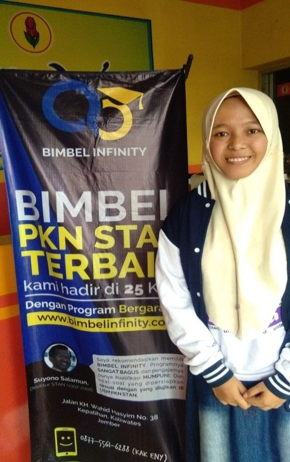
Afaf Mutia Zahwa D3 Kebendaharaan Negara alhamdulillah, selama saya belajar bareng Infinity, Saya semakin semangat belajarnya karena Try Out nya juga selalu rutin diadakan, sehingga ilmu yang diajarkan dapat diingat dan diulang kembali. -
Novita Milensia D3 Kebendaharaan Negara Masha Allah, senang bisa jadi keluarga Infinity. Karena dengan bimbel ini saya berhasil Meraih impian saya. Dengan tentornya yang hebat dan seru. Serta buku rumus cepat dari Infinity, Yang menjadi favorite saya. Terimakasih Infinity, Sukses selalu.
-
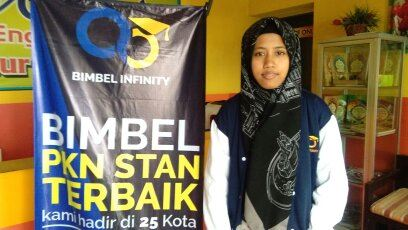
Ba'diyah Qurbani Fatimah D1 Kebendaharaan Negara -
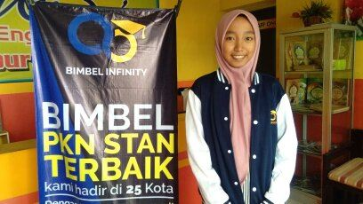
Ira Safiratul Ulum D1 Kebendaharaan Negara -
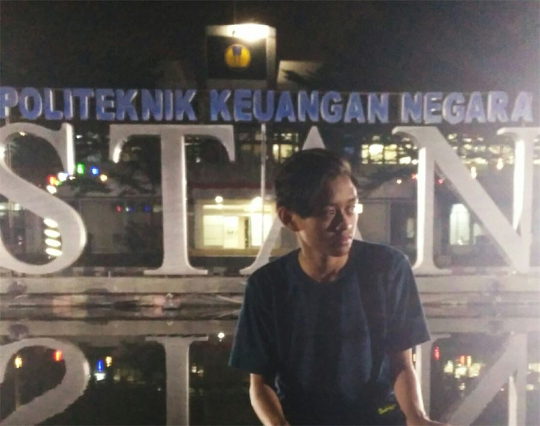
Nabil Muhammad Hirzi D3 Pajak Selama mengikuti les di Infinity saya dipacu untuk menjadi rajin dan lebih baik lagi, telah banyak sekali gambaran" yg diberikan untuk kedepannya menghadapi usm PKN STAN. guru" nya asik dan mengajarkan materi dengan baik. -
BeasiswaDennis Gibrail D3 Akuntansi Mendapatkan kesempatan beasiswa les di Bimbel Infinity Sukabumi sangat membantu saya untuk menggapai cita - cita saya untuk masuk di PKN STAN. Guru - gurunya mengajarkan model - model soal USM STAN dengan jelas dan sabar. Bimbel Infinity Sukabumi sangat saya rekomendasikan bagi yang ingin lulus masuk ke PKN STAN. Terimakasih Bimbel Infinity Sukabumi!
-
Ghanifrizal Pikharidho D3 Kepabeanan dan Cukai Terima kasih atas bantuanya dan nasihatnya sehingga saya bisa meraih salah satu mimpi saya. Kuliah di STAN adalah impian besar yang paling saya harapkan dan infinity sangat membantu dalam hal materi dan pemberian motivasinya.
-
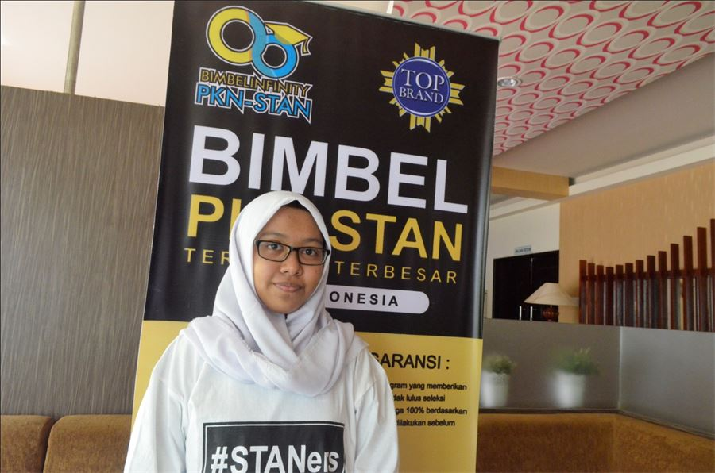
Siti Nur Aulia D3 Akuntansi -
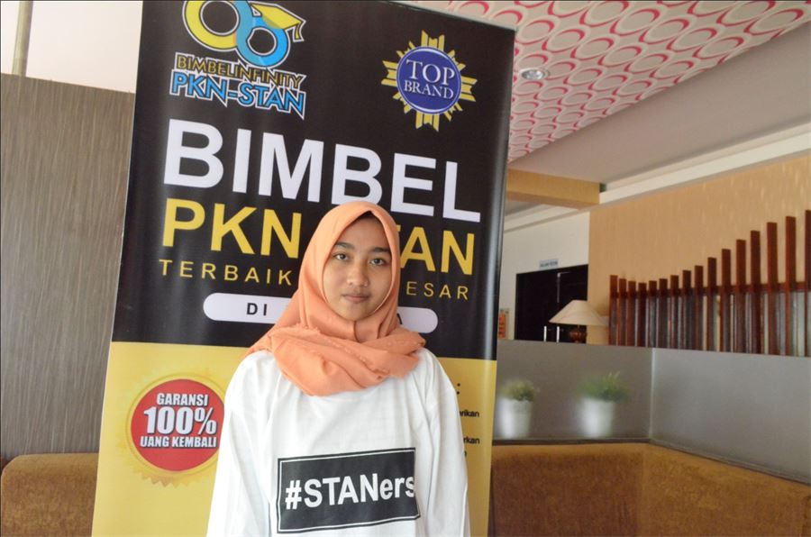
Reza Gustina Annisa D3 Akuntansi -
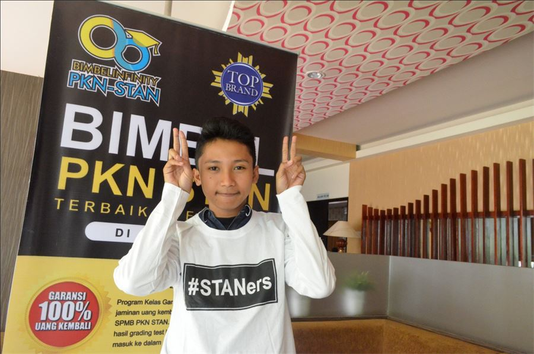
Mammar Trijayeng CN D1 Kebendaharaan Negara -
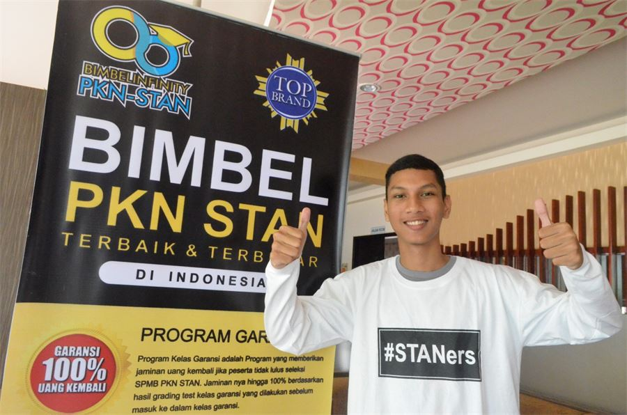
Ega Yuri Prasetyo D3 Kebendaharaan Negara -
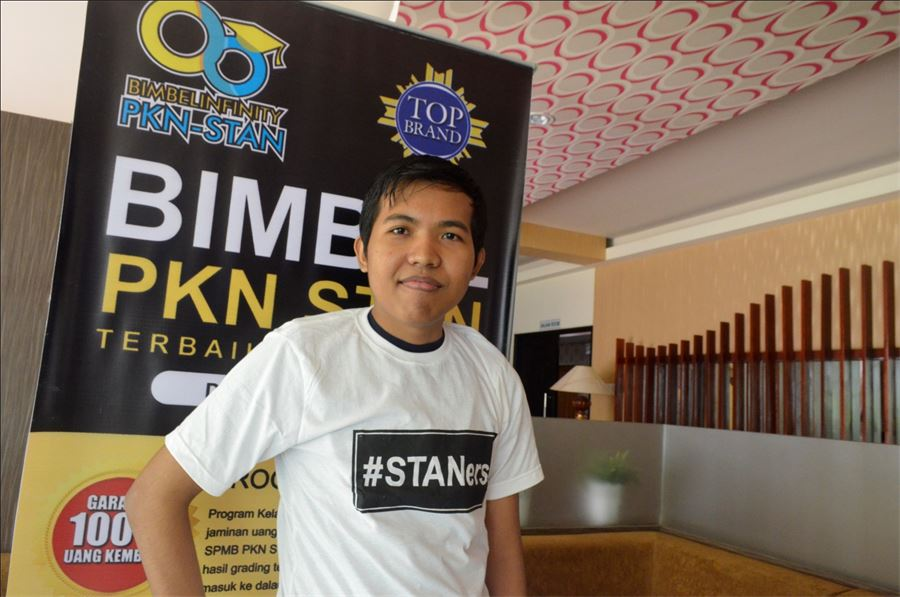
Rama Adiputra D3 Penilai/PBB -
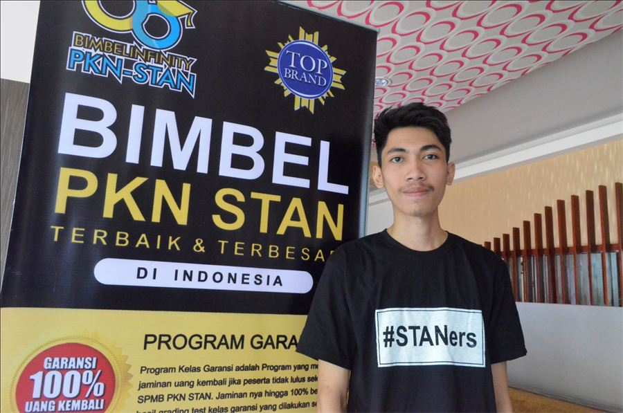
I Nyoman Dhiki W D1 Pajak -
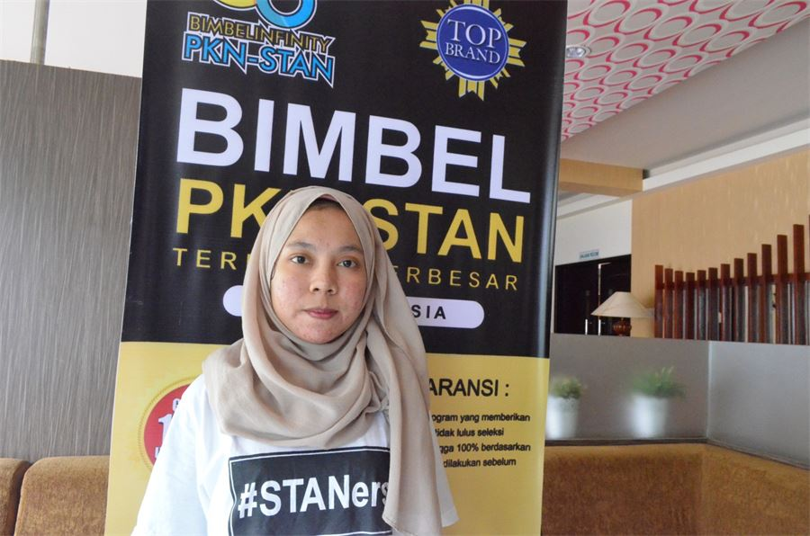
Mada Maharani D1 Kebendaharaan Negara -
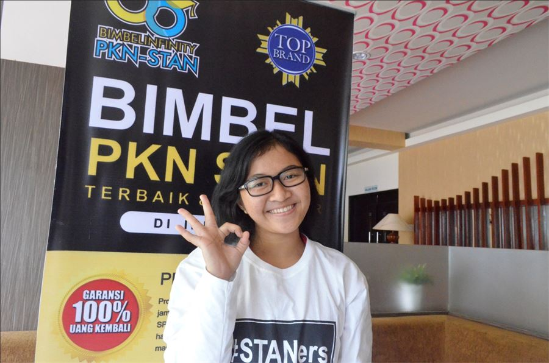
Ida Ayu Ardyathami D3 Penilai/PBB -
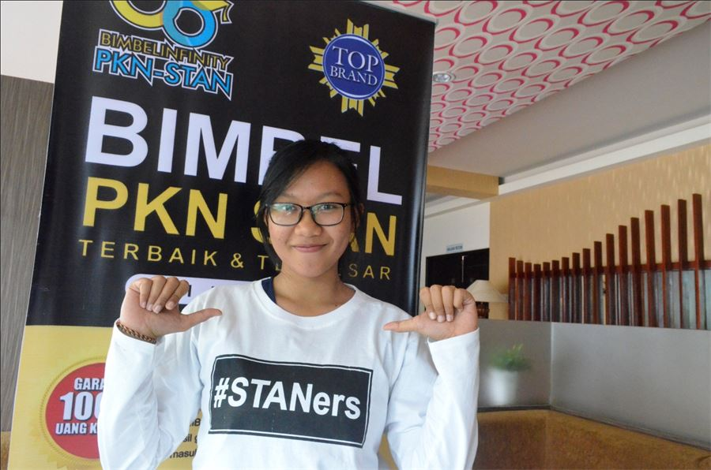
Elvira Septiana Hasbi D3 Akuntansi -
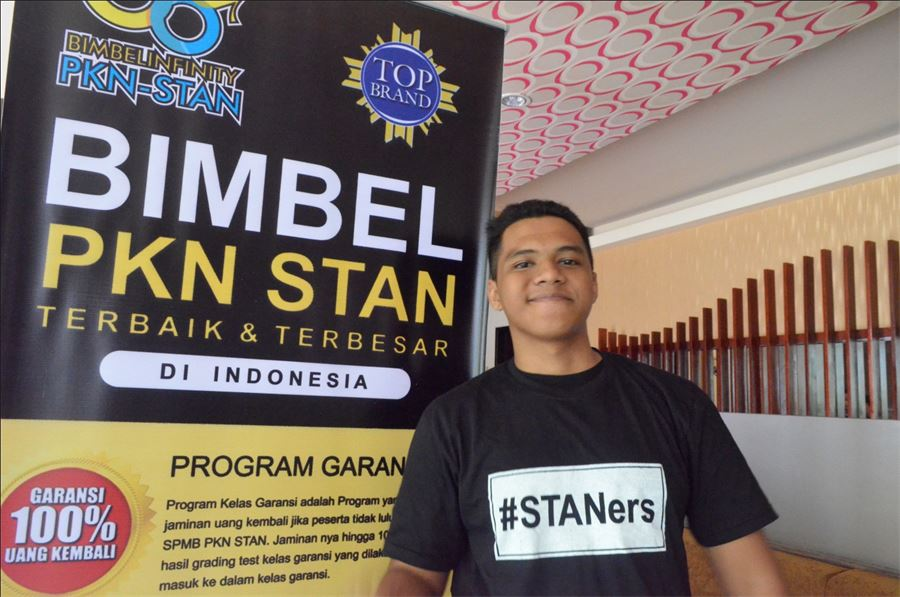
Fatih Walia Muthahhari D1 Kebendaharaan Negara -
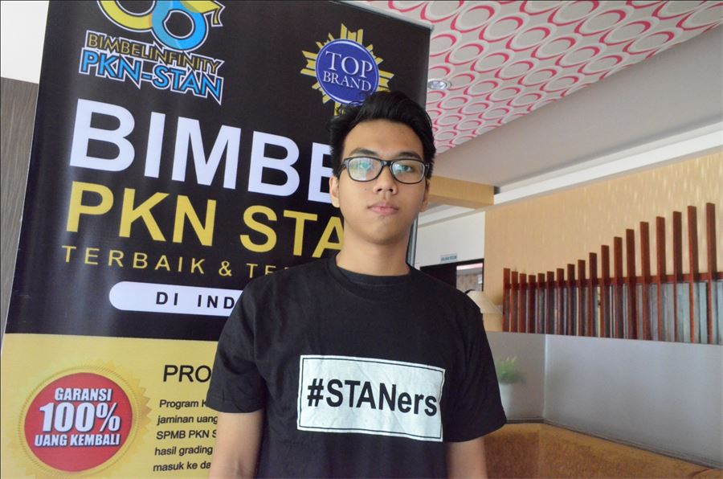
Armuzuhal Tabrani ARS D3 Pajak -
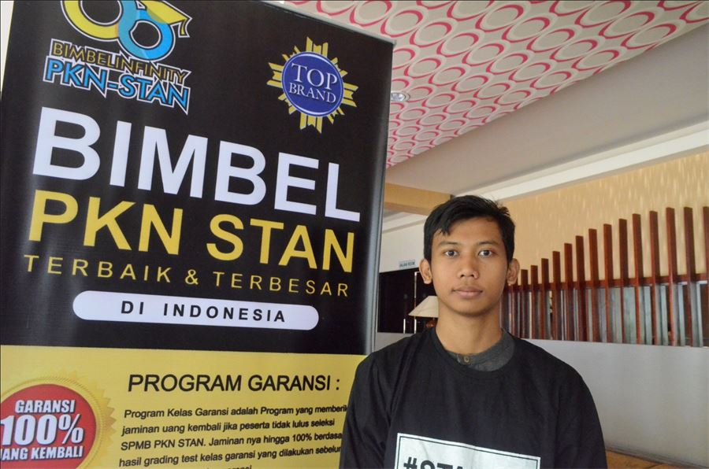
Reyza Satrio Maulana D3 Akuntansi -
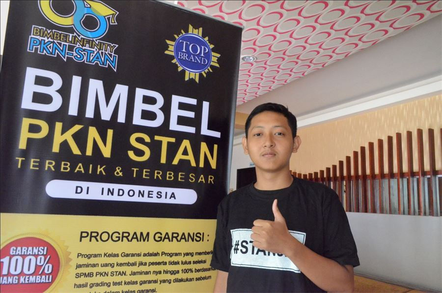
I Nyoman Sthya KV D3 Akuntansi -
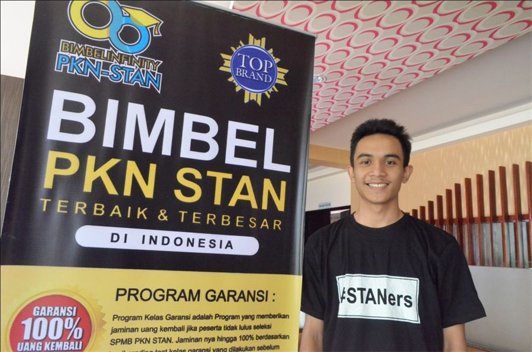
Putu Hari Gita Kusuma D3 Pajak -
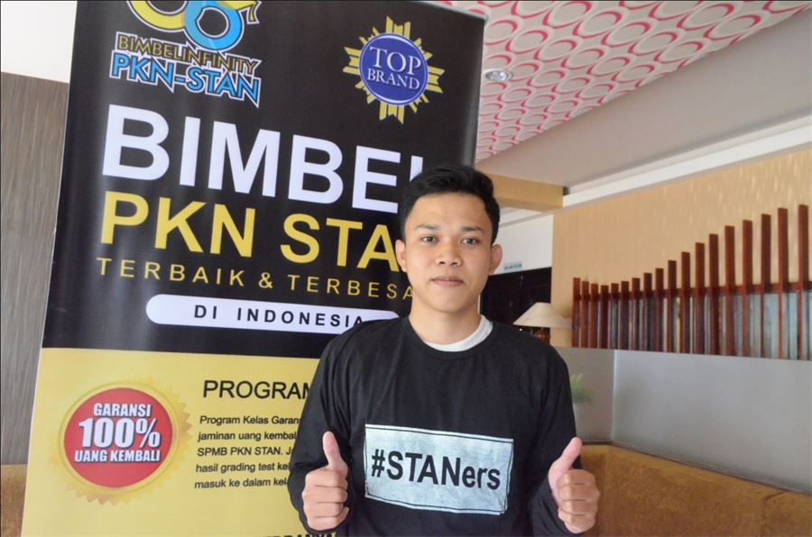
Lalu Reinald Ansyari W D3 Akuntansi -
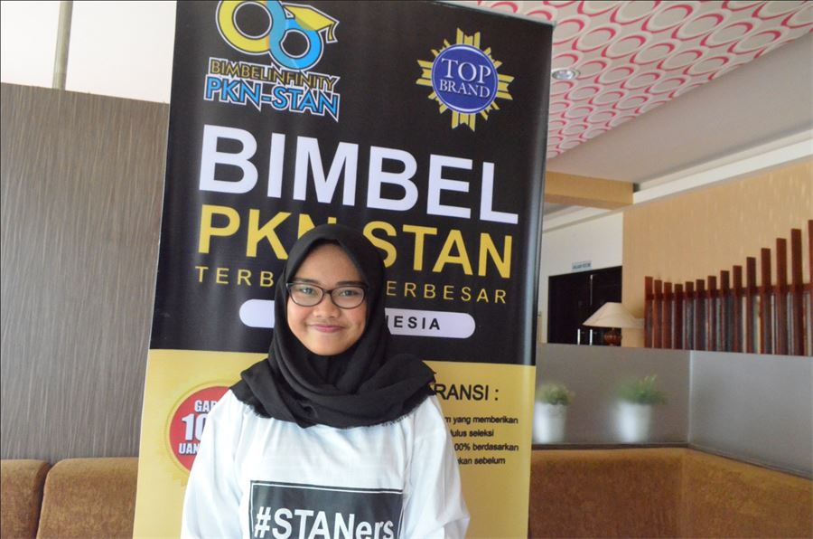
Alya Fadhilatunnisa H D3 Pajak
Data dan foto dari arsip Bimbel Infinity. Siswa Lombok tidak menyertakan testimoni tertulis. Lulusan yang ingin datanya diubah atau dihapus dapat menghubungi admin di bimbelinfinityid@gmail.com.
Be Infiniters. Be STANers.
Ceritakan posisimu sekarang. Admin kami bantu pilih program yang paling pas, termasuk konsultasi gratis untuk orang tua.